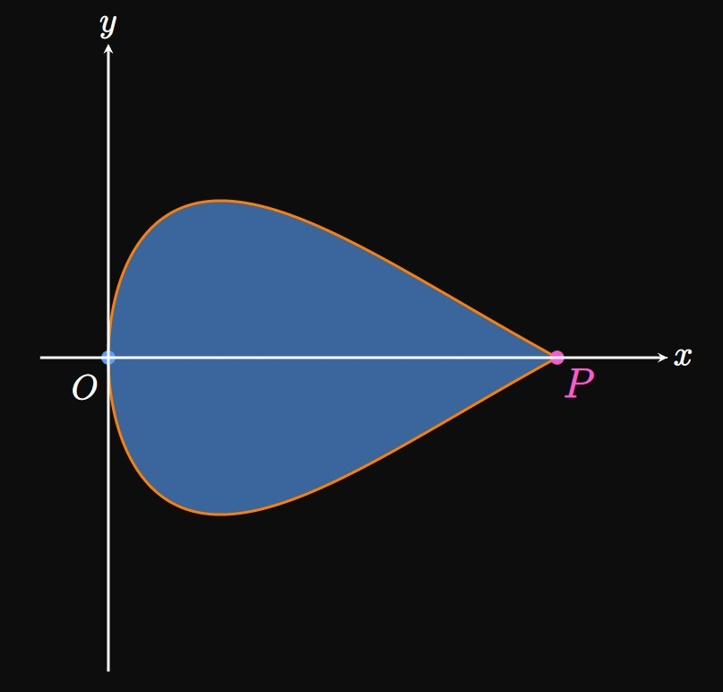

9.2 Exercise Solutions: Differentiating and Integrating Parametric Functions
EXERCISE 1
How do you find the slope to a parametric curve?
SOLUTION
The slope is \(\textderiv{y}{x},\)
which is given by
\[\deriv{y}{x} = \frac{\textderiv{y}{t}}{\textderiv{x}{t}} \pd\]
This form is a function of \(t;\)
it enables us to determine the slope without eliminating the parameter.
EXERCISE 2
For a parametric curve, how do you find \(\textderivOrder{y}{x}{2} \ques\)
SOLUTION
The second derivative is given by
\[\derivOrder{y}{x}{2} = \frac{\ds \deriv{}{t}\left(\deriv{y}{x}\right)}{\textderiv{x}{t}} \pd\]
EXERCISE 3
For
\[\ds x = 3t \cma y = \sin^2 t \scol t = \frac{\pi}{4}\]
calculate the slope of the line tangent to the graph at the given point.
SOLUTION
The slope at any \(t\) on the graph is given by
\[\deriv{y}{x} = \frac{\textderiv{y}{t}}{\textderiv{x}{t}} \pd\]
Differentiating each parametric function gives
\[
\ba
\deriv{x}{t} &= 3 \nl
\deriv{y}{t} &= 2 \sin t \cos t = \sin 2 t \pd
\ea
\]
Hence, the slope at \(t = \pi/4\) is
\[\deriv{y}{x} \intEval_{t = \pi/4} = \frac{\sin \frac{\pi}{2}}{3} = \boxed{\frac{1}{3}}\]
EXERCISE 4
For
\[\ds x = \cos 2t \cma y = 2t + 3 \scol t = \frac{3\pi}{4}\]
calculate the slope of the line tangent to the graph at the given point.
SOLUTION
At any \(t\) on the graph, the slope is given by
\[\deriv{y}{x} = \frac{\textderiv{y}{t}}{\textderiv{x}{t}} \pd\]
Differentiating each parametric function shows
\[
\ba
\deriv{x}{t} &= -2 \sin 2t \nl
\deriv{y}{t} &= 2 \pd
\ea
\]
Thus, the slope at \(t = 3\pi/4\) is
\[\deriv{y}{x} \intEval_{t = 3\pi/4} = \frac{2}{-2 \sin \frac{3\pi}{2}} = \boxed{1}\]
EXERCISE 5
For
\[\ds x = 2t^2 - 5t + 3 \cma y = t^3 + 2 \scol t = 5\]
calculate the slope of the line tangent to the graph at the given point.
SOLUTION
The slope at any \(t\) is
\[\deriv{y}{x} = \frac{\textderiv{y}{t}}{\textderiv{x}{t}} \pd\]
The derivatives of both parametric functions are
\[
\ba
\deriv{x}{t} &= 4t - 5 \nl
\deriv{y}{t} &= 3t^2 \pd
\ea
\]
The slope at \(t = 5\) is therefore
\[\deriv{y}{x} \intEval_{t = 5} = \frac{3(5)^2}{4(5) - 5} = \boxed 5\]
EXERCISE 6
For
\[\ds x = t^3 - 8t + 4 \cma y = t^6 + 2t^3 - 2 \scol t = 1\]
calculate the slope of the line tangent to the graph at the given point.
SOLUTION
The slope at any \(t\) is
\[\deriv{y}{x} = \frac{\textderiv{y}{t}}{\textderiv{x}{t}} \pd\]
The derivatives of both parametric functions are
\[
\ba
\deriv{x}{t} &= 3t^2 - 8 \nl
\deriv{y}{t} &= 6t^5 + 6t^2 \pd
\ea
\]
Thus, at \(t = 1\) the slope is
\[\deriv{y}{x} \intEval_{t = 1} = \frac{6(1)^5 + 6(1)^2}{3(1)^2 - 8} = \boxed{-\frac{12}{5}}\]
EXERCISE 7
For
\[\ds x = 3 \sin t \cma y = t^2 \scol t = 0\]
calculate the slope of the line tangent to the graph at the given point.
SOLUTION
At any \(t\) on the graph, the slope is
\[\deriv{y}{x} = \frac{\textderiv{y}{t}}{\textderiv{x}{t}} \pd\]
We differentiate both parametric functions to get
\[
\ba
\deriv{x}{t} &= 3 \cos t \nl
\deriv{y}{t} &= 2t \pd
\ea
\]
Hence, the slope at \(t = 0\) is
\[\deriv{y}{x} \intEval_{t = 0} = \frac{2(0)}{3 \cos 0} = \boxed{0}\]
The graph therefore has a horizontal tangent when \(t = 0\)
since the slope is \(0.\)
EXERCISE 8
For
\[\ds x = 2t^2 \cma y = \sin t \scol t = \pi\]
calculate the slope of the line tangent to the graph at the given point.
SOLUTION
The slope of the graph at any \(t\) is given by
\[\deriv{y}{x} = \frac{\textderiv{y}{t}}{\textderiv{x}{t}} \pd\]
When we differentiate each parametric function, we attain
\[
\ba
\deriv{x}{t} &= 4t \nl
\deriv{y}{t} &= \cos t \pd
\ea
\]
The slope at \(t = \pi\) is therefore
\[\deriv{y}{x} \intEval_{t = \pi} = \frac{\cos \pi}{4 \pi} = \boxed{-\frac{1}{4 \pi}}\]
EXERCISE 9
For
\[\ds x = \frac{t^5}{5} \cma y = 4 + \ln t \scol t = 2\]
calculate the slope of the line tangent to the graph at the given point.
SOLUTION
The slope of the graph at any \(t\) is given by
\[\deriv{y}{x} = \frac{\textderiv{y}{t}}{\textderiv{x}{t}} \pd\]
We see
\[
\ba
\deriv{x}{t} &= t^4 \nl
\deriv{y}{t} &= \frac{1}{t} \pd
\ea
\]
The slope at \(t = 2\) is therefore
\[\deriv{y}{x} \intEval_{t = 2} = \frac{1/2}{2^4} = \boxed{\frac{1}{32}}\]
EXERCISE 10
For
\[\ds x = e^t \cma y = \sec t \scol t = 0\]
calculate the slope of the line tangent to the graph at the given point.
SOLUTION
The slope of the graph at any \(t\) is given by
\[\deriv{y}{x} = \frac{\textderiv{y}{t}}{\textderiv{x}{t}} \pd\]
When we differentiate each parametric function, we attain
\[
\ba
\deriv{x}{t} &= e^t \nl
\deriv{y}{t} &= \sec t \tan t \pd
\ea
\]
The slope at \(t = 0\) is therefore
\[\deriv{y}{x} \intEval_{t = 0} = \frac{\sec 0 \tan 0}{e^0} = \boxed{0}\]
The graph therefore has a horizontal tangent when \(t = 0.\)
EXERCISE 11
For
\[\ds x = \cos 2t \cma y = 2t^2 \scol t = \frac{\pi}{2}\]
calculate the slope of the line tangent to the graph at the given point.
SOLUTION
The slope at any \(t\) is
\[\deriv{y}{x} = \frac{\textderiv{y}{t}}{\textderiv{x}{t}} \pd\]
The derivatives of both parametric functions are
\[
\ba
\deriv{x}{t} &= -2 \sin 2t \nl
\deriv{y}{t} &= 4t \pd
\ea
\]
The slope at \(t = \pi/2\) is
\[\deriv{y}{x} \intEval_{t = \pi/2} = \frac{4 \par{\frac{\pi}{2}}}{-2 \sin \pi} \cma\]
where the denominator is \(0\) but the numerator is nonzero.
The graph therefore has a vertical tangent when \(t = \pi/2.\)
EXERCISE 12
For
\[\ds x = 2t^3 + 8 \cma y = 1 - 7t^2\]
find \(\textderiv{^2 y}{x^2}\) for the curve parameterized by the given equations.
SOLUTION
The second derivative is given by
\[\deriv{^2 y}{x^2} = \frac{\ds \deriv{}{t}\left(\deriv{y}{x}\right)}{\textderiv{x}{t}} \cma\]
where
\[\deriv{y}{x} = \frac{\textderiv{y}{t}}{\textderiv{x}{t}} = \frac{-14t}{6t^2} = -\frac{7}{3t} \pd\]
Thus,
\[\deriv{^2 y}{x^2} = \frac{\ds \deriv{}{t}\left(-\frac{7}{3t}\right)}{6t^2} =
\frac{7/3t^2}{6t^2} = \boxed{\frac{7}{18t^4}}
\]
EXERCISE 13
For
\[\ds x = 6 + \sin t \cma y = 3t + 4\]
find \(\textderiv{^2 y}{x^2}\) for the curve parameterized by the given equations.
SOLUTION
The second derivative is given by
\[\deriv{^2 y}{x^2} = \frac{\ds \deriv{}{t}\left(\deriv{y}{x}\right)}{\textderiv{x}{t}} \cma\]
where
\[\deriv{y}{x} = \frac{\textderiv{y}{t}}{\textderiv{x}{t}} = \frac{3}{\cos t} = 3 \sec t \pd\]
Thus,
\[\deriv{^2 y}{x^2} = \frac{\ds \deriv{}{t}\left(3 \sec t\right)}{\cos t} =
\frac{3 \sec t \tan t}{\cos t} = \boxed{3 \sec^2 t \tan t}
\]
EXERCISE 14
For
\[\ds x = \tan t \cma y = 3t^2 + 5t - 8\]
find \(\textderiv{^2 y}{x^2}\) for the curve parameterized by the given equations.
SOLUTION
The second derivative is given by
\[\deriv{^2 y}{x^2} = \frac{\ds \deriv{}{t}\left(\deriv{y}{x}\right)}{\textderiv{x}{t}} \cma\]
where
\[\deriv{y}{x} = \frac{\textderiv{y}{t}}{\textderiv{x}{t}} = \frac{6t + 5}{\sec^2 t} = (6t + 5) \cos^2 t \pd\]
Thus,
\[
\ba
\deriv{^2 y}{x^2} &= \frac{\ds \deriv{}{t}\left[(6t + 5) \cos^2 t \right]}{\sec^2 t} \nl
&= \frac{6 \cos^2 t - 2(6t + 5) \cos t \sin t}{\sec^2 t} \nl
&= \boxed{6 \cos^4 t - (12t + 10) \cos^3 t \sin t}
\ea
\]
EXERCISE 15
For
\[\ds x = \sec t - 2 \cma y = 2 \tan t + 4\]
find \(\textderiv{^2 y}{x^2}\) for the curve parameterized by the given equations.
SOLUTION
The second derivative is given by
\[\deriv{^2 y}{x^2} = \frac{\ds \deriv{}{t}\left(\deriv{y}{x}\right)}{\textderiv{x}{t}} \cma\]
where
\[\deriv{y}{x} = \frac{\textderiv{y}{t}}{\textderiv{x}{t}} = \frac{2 \sec^2 t}{\sec t \tan t} = 2 \csc t \pd\]
Thus,
\[
\ba
\deriv{^2 y}{x^2} &= \frac{\ds \deriv{}{t} \par{2 \csc t}}{\sec t \tan t} \nl
&= \frac{-2 \csc t \cot t}{\sec t \tan t} \nl
&= \boxed{-2 \cot^3 t}
\ea
\]
EXERCISE 16
For
\[\ds x = 3 + 2 \sec t \cma y = 5 \cos 2t\]
find \(\textderiv{^2 y}{x^2}\) for the curve parameterized by the given equations.
SOLUTION
The second derivative is given by
\[\deriv{^2 y}{x^2} = \frac{\ds \deriv{}{t}\left(\deriv{y}{x}\right)}{\textderiv{x}{t}} \cma\]
where
\[\deriv{y}{x} = \frac{\textderiv{y}{t}}{\textderiv{x}{t}}
= \frac{-10 \sin 2t}{2 \sec t \tan t} = \frac{-10 \sin t \cos t}{\sec t \tan t} - -10 \cos^3 t \pd\]
Thus,
\[
\ba
\deriv{^2 y}{x^2} &= \frac{\ds \deriv{}{t} \par{-10 \cos^3 t}}{2 \sec t \tan t} \nl
&= \frac{30 \cos^2 t \sin t}{2 \sec t \tan t} \nl
&= \boxed{15 \cos^4 t}
\ea
\]
EXERCISE 17
At \(t = 1,\) find an equation of the line tangent to the curve parameterized by
\[x = 6t^2 - 8t + 7 \lspace y = t^3 - 2t - 3 \pd\]
SOLUTION
For any \(t,\) the slope to the graph is
\[\deriv{y}{x} = \frac{\textderiv{y}{t}}{\textderiv{x}{t}} = \frac{3t^2 - 2}{12t - 8} \pd\]
Thus, the slope at \(t = 1\) is
\[\deriv{y}{x} \intEval_{t = 1} = \frac{3(1)^2 - 2}{12(1) - 8} = \frac{1}{4} \pd\]
When \(t = 1,\)
\[x = 6(1)^2 - 8(1) + 7 = 5 \lspace y = (1)^3 - 2(1) - 3 = -4 \pd\]
An equation of the tangent line at \(t = 1\) is therefore
\[y - (-4) = \tfrac{1}{4} (x - 5) \implies \boxed{y + 4 = \tfrac{1}{4} (x - 5)}\]
EXERCISE 18
Find an equation of the line tangent to the ellipse parameterized by \(x = 2 \cos t\)
and \(y = 3 \sin t\) when \(t = \pi/4.\)
SOLUTION
The slope to the graph at any \(t\) is given by
\[\deriv{y}{x} = \frac{\textderiv{y}{t}}{\textderiv{x}{t}} = \frac{3 \cos t}{-2 \sin t} \pd\]
When \(t = \pi/4,\) the slope is
\[\deriv{y}{x} \intEval_{t = \pi/4} = \frac{3 \cos \frac{\pi}{4}}{-2 \sin \frac{\pi}{4}} = -\frac{3}{2} \cma\]
and
\[x = 2 \cos \tfrac{\pi}{4} = \sqrt 2 \lspace y = 3 \sin \tfrac{\pi}{4} = \frac{3 \sqrt 2}{2} \pd\]
Thus, an equation of the tangent line at \(t = \pi/4\) is
\[\boxed{y - \frac{3 \sqrt 2}{2} = -\frac{3}{2} \par{x - \sqrt 2}}\]
EXERCISE 19
Determine an equation of the line tangent to the curve parameterized by \(x = 3 \sin 2t\)
and \(y = e^{-t}\) when \(t = 0.\)
SOLUTION
The slope to the graph at any \(t\) is given by
\[\deriv{y}{x} = \frac{\textderiv{y}{t}}{\textderiv{x}{t}} = \frac{-e^{-t}}{6 \cos 2t} \pd\]
When \(t = 0,\) the slope is
\[\deriv{y}{x} \intEval_{t = 0} = \frac{-e^{0}}{6 \cos 0} = -\frac{1}{6} \cma\]
and
\[x = 3 \sin 0 = 0 \lspace y = e^0 = 1 \pd\]
Hence, an equation of the tangent line at \(t = 0\) is
\[y - 1 = -\tfrac{1}{6}(x - 0) \implies \boxed{y - 1 = -\tfrac{1}{6}x}\]
EXERCISE 20
A curve is parameterized by
\[x = t^2 - 6t + 2 \lspace y = \tfrac{1}{3} t^3 - \tfrac{3}{2} t^2 - 5 \pd\]
Find all values of \(t\) such that the tangent to the graph has slope \(1.\)
SOLUTION
At any \(t\) the slope to the graph is
\[\deriv{y}{x} = \frac{\textderiv{y}{t}}{\textderiv{x}{t}} = \frac{t^2 - 3t}{2t - 6} \pd\]
Solving \(\textderiv{y}{x} = 1\) shows
\[
\ba
\frac{t^2 - 3t}{2t - 6} &= 1 \nl
t^2 - 3t &= 2t - 6 \nl
t^2 - 5t + 6 &= 0 \nl
(t - 3)(t - 2) &= 0 \cma
\ea
\]
whose only solution is \(t = 2.\)
The solution \(t = 3\) is extraneous because \(\textderiv{y}{x}\) is undefined when \(t = 3.\)
Thus, the slope of the tangent is \(1\) when \(\boxed{t = 2}.\)
EXERCISE 21
Consider the parametric equations
\[x = 3t^2 + 2t + 5 \lspace y = -t^2 + 4t - 4 \pd\]
Find the values of \(t\) corresponding to the graph's
horizontal tangents and vertical tangents.
SOLUTION
At any \(t\) the slope to the graph is
\[\deriv{y}{x} = \frac{\textderiv{y}{t}}{\textderiv{x}{t}} = \frac{-2t + 4}{6t + 2} = \frac{-t + 2}{3t + 1} \pd\]
The graph has a horizontal tangent when \(\textderiv{y}{x} = 0,\)
that is, when \(\textderiv{y}{t} = 0\) but \(\textderiv{x}{t} \ne 0.\)
When \(t = 2\) the numerator is \(0\) and the denominator is nonzero;
thus, the graph has a horizontal tangent when \(t = 2.\)
Conversely, the graph has a vertical tangent when \(t = -1/3\)
since the denominator is \(0\) but the numerator is nonzero.
EXERCISE 22
A curve is parameterized by the equations \(x = \sec t\)
and \(y = 2t\) for \(-\pi/2 \lt t \lt \pi/2.\)
Find the minimum value of \(x\) over this interval.
SOLUTION
We need to minimize the function \(x\) for \(t\) in \((-\pi/2, \pi/2).\)
(See Section 3.2
to review the process of determining minima or maxima.)
We find
\[\deriv{x}{t} = \sec t \tan t \pd\]
Solving \(\textderiv{x}{t} = 0\)
gives \(t = 0;\)
this value indicates a relative minimum
of \(x\) since \(\textderiv{x}{t}\) changes sign from negative to positive at \(t = 0.\)
We see
\[\lim_{t \to (-\pi/2)^+} \sec t = \infty \and \lim_{t \to (\pi/2)^-} \sec t = \infty \pd\]
Thus, \(t = 0\) must correspond to the absolute minimum of \(x,\)
which is \(\sec 0 = \boxed 1.\)
EXERCISE 23
Find all the inflection points of the graph parameterized by the equations \(x = t^2\) and
\(y = 8 - 2t^5.\)
SOLUTION
The graph has an inflection point when \(\textderiv{^2 y}{x^2}\)
changes sign.
The second derivative is given by
\[\deriv{^2 y}{x^2} = \frac{\ds \deriv{}{t}\left(\deriv{y}{x}\right)}{\textderiv{x}{t}} \cma\]
where
\[\deriv{y}{x} = \frac{\textderiv{y}{t}}{\textderiv{x}{t}} = \frac{-10t^4}{2t} = -5t^3 \pd\]
Thus, we have
\[\deriv{^2 y}{x^2} = \frac{\ds \deriv{}{t}\par{-5t^3}}{2t} = \frac{-15t^2}{2t} = -\frac{15t}{2} \cma\]
which changes sign at \(t = 0,\) and so the graph has an inflection point when \(t = 0.\)
At \(t = 0\)
\[x = 0^2 = 0 \lspace y = 8 - 2(0)^2 = 8 \pd\]
Thus, the inflection point is \(\boxed{(0, 8)}.\)
EXERCISE 24
Let parametric equations of a graph satisfy \(\textderiv{x}{t} = 5\) and \(y = t^3 + 3t^2 - 4.\)
Find the values of \(t\) over which the graph is concave down.
SOLUTION
The graph is concave down when \(\textderiv{^2 y}{x^2} \lt 0.\)
The second derivative is given by
\[\deriv{^2 y}{x^2} = \frac{\ds \deriv{}{t}\left(\deriv{y}{x}\right)}{\textderiv{x}{t}} \cma\]
where
\[\deriv{y}{x} = \frac{\textderiv{y}{t}}{\textderiv{x}{t}} = \frac{3t^2 + 6t}{5} \pd\]
So
\[\deriv{^2 y}{x^2} = \frac{\ds \deriv{}{t}\par{\frac{3t^2 + 6t}{5}}}{5} = \frac{6t + 6}{25} \pd\]
Notice that \(\textderiv{^2 y}{x^2} \lt 0\) when \(\boxed{t \lt -1}.\)
EXERCISE 25
Consider the family of graphs defined by the parametric functions
\(x = 2k \sin t\) and \(y = 1 - kt^2\) for any constant \(k.\)
Find all values of \(t\) such that the slope to the graph is equal to \(t.\)
SOLUTION
The slope to the graph at any \(t\) is given by
\[\deriv{y}{x} = \frac{\textderiv{y}{t}}{\textderiv{x}{t}} = \frac{-2kt}{2k \cos t} = \frac{-t}{\cos t} \pd\]
Solving \(\textderiv{y}{x} = t\) shows
\[\frac{-t}{\cos t} = t \implies \cos t = -1 \implies \boxed{t = \pi + 2 \pi n}\]
for any integer \(n.\)
EXERCISE 26
A pond is found at the trough of a mountain, whose shape is modeled by a curve
parameterized by \(x = \sqrt t\) and \(y = t^2 - 4t\) for \(0 \leq t \leq 2\)
(Figure 1).
At what time \(t\) in \(0 \leq t \leq 1\) does the curve hit the origin \(O \ques\)
Determine the coordinates of point \(P.\)
Calculate the area of region \(R.\)
SOLUTION
The curve hits \((0, 0)\) when
\[x = \sqrt t = 0 \and y = t^2 - 4t = 0 \cma \]
which occurs when \(\boxed{t = 0}.\)
At point \(P,\) \(y = 0\) and \(x \ne 0.\)
Equating \(y = 0,\) we find
\[t^2 - 4t = 0 \implies t = 0 \cma t = 4 \pd\]
We ignore \(t = 0\) because at this time the graph touches the origin.
When \(t = 4,\)
\[x = \sqrt 4 = 2 \lspace y = (4)^2 - 4(4) = 0 \pd\]
The coordinates of \(P\) are therefore \(\boxed{(2, 0)}.\)
In Cartesian coordinates, the area of region \(R\)
is given by the magnitude of
\[\int_{x = 0}^{x = 2} y \di x \pd\]
We use the Substitution Rule
(from Section 4.4) to convert this integral to be entirely in terms of \(t.\)
The problem gives \(y = t^2 - 4t,\)
and differentiating \(x = \sqrt t\)
shows \(\dd x = \dd t/(2 \sqrt t).\)
In addition, \(x = 0\) when \(t = 0\) and \(x = 2\) when \(t = 4.\)
The integral therefore becomes
\[
\ba
\int_0^4 (t^2 - 4t) \, \frac{1}{2 \sqrt t} \di t &= \tfrac{1}{2} \int_0^4 \frac{t^2 - 4t}{t^{1/2}} \di t \nl
&= \tfrac{1}{2} \int_0^4 t^{3/2} - 4t^{1/2} \di t \nl
&= \tfrac{1}{2} \par{\tfrac{2}{5} t^{5/2} - \tfrac{8}{3} t^{3/2}} \intEval_0^4 \nl
&= \tfrac{1}{2} \parbr{\tfrac{2}{5} (4)^{5/2} - \tfrac{8}{3} (4)^{3/2}} - \tfrac{1}{2} (0 - 0) \nl
&= \tfrac{1}{2} \parbr{\tfrac{2}{5}(32) - \tfrac{8}{3}(8)} \nl
&= -\tfrac{64}{15} \pd
\ea
\]
We flip the sign to get the positive area of \(\boxed{64/15}.\)
EXERCISE 27

The graph parameterized by \(x = t^2/3\) and \(y = \sin t\) for \(-\pi \leq t \leq \pi\)
traces out a teardrop shape,
as shown by Figure 2.
Find the times \(t\) in the interval \(-\pi \leq t \leq \pi\)
at which the curve has horizontal tangents.
Determine the time \(t\) at which the curve hits the origin \(O.\)
Find the coordinates of point \(P.\)
Calculate the area of the teardrop.
SOLUTION
The graph has a horizontal tangent when \(\textderiv{y}{x} = 0,\)
that is, when \(\textderiv{y}{t} = 0\) but \(\textderiv{x}{t} \ne 0.\)
We have
\[\deriv{y}{x} = \frac{\textderiv{y}{t}}{\textderiv{x}{t}} = \frac{\cos t}{2t/3} = \frac{3 \cos t}{2t} \cma\]
which is \(0\) when \(t = \pi/2\) and \(t = -\pi/2\)
(at both values, the denominator is nonzero).
Thus, the graph has horizontal tangents when
\(\boxed{t = -\pi/2}\) and \(\boxed{t = \pi/2}.\)
The graph intersects the origin when \(x = 0\) and \(y = 0.\)
Over the interval \(-\pi \leq t \leq \pi,\)
the functions \(t^2/3\) and \(\sin t\) both equal \(0\) when \(\boxed{t = 0}.\)
At point \(P\) we have \(y = \sin t = 0\) and \(x \ne 0,\)
which occurs when \(t = -\pi\) and \(t = \pi.\)
At either value of \(t,\) we see
\[x = \frac{\pi^2}{3} \lspace y = \sin \pi = 0 \pd\]
The coordinates are therefore \(\boxed{(\pi^2/3, 0)}.\)
By symmetry, we can find the area of half of the teardrop
and double it.
For simplicity, we calculate the area of the top half of the teardrop,
in the first quadrant (bounded by the curve and the \(x\)-axis).
In Cartesian coordinates,
this area is given by the integral
\[\int_{x = 0}^{x = \pi^2/3} y \di x \pd\]
We use the Substitution Rule to convert this form to be entirely in terms of \(t \col\)
We are given \(y = \sin t,\) and differentiating the given \(x = t^2/3\) shows \(\dd x = (2t/3) \di t.\)
Additionally \(x = 0\) when \(t = 0,\) and \(x = \pi^2/3\)
when \(t = \pi\) (or \(t = -\pi;\) integrating from \(0\) to \(-\pi\) gives the area of the bottom
half of the teardrop).
Our integral therefore becomes
\[\int_0^\pi (\sin t) \par{\tfrac{2}{3} t} \di t = \tfrac{2}{3} \int_0^\pi t \sin t \di t \pd\]
Using Integration by Parts (see Section 6.1),
the integral becomes
\[\tfrac{2}{3} \par{-t \cos t + \sin t} \intEval_0^\pi
= \tfrac{2}{3} \par{- \pi \cos \pi + \sin \pi} - \tfrac{2}{3} (0 + 0)
= \tfrac{2}{3} \pi \pd\]
Hence, the area of the entire region is
\[2 \par{\tfrac{2}{3} \pi} = \boxed{\tfrac{4}{3} \pi}\]
EXERCISE 28
A region is enclosed by the \(y\)-axis and the curve parameterized by
\(x = 5 \sin t\) and \(y = 3t\) for \(0 \leq t \leq \pi.\)
There are several ways to represent this area.
Show that the area is given by the integral
\[15 \int_0^{\pi} \sin t \di t \pd \]
Eliminate the parameter to show that the area is also represented by the integral
\[5 \int_0^{3 \pi} \sin \frac{y}{3} \di y \pd \]
Calculate the area of the region.
SOLUTION
In Cartesian coordinates, the area is given by
\[\int_{y = 0}^{y = 3 \pi} x \di y \pd\]
We now express all quantities in terms of \(t \col\)
We are given \(x = 5 \sin t;\)
differentiating \(y = 3t\) shows \(\dd y = 3 \di t.\)
When \(y = 0,\) \(t = 0;\)
when \(y = 3 \pi,\) \(t = \pi.\)
Thus, the integral is
\[\int_0^\pi (5 \sin t)(3) \di t = 15 \int_0^\pi \sin t \di t \cma\]
as requested.
We want to eliminate the parameter \(t.\)
The simplest method is as follows:
Solving for \(t\) in \(y = 3t\) shows \(t = y/3.\)
Substituting this expression into \(x = 5 \sin t\)
gives \(x = 5 \sin(y/3).\)
Accordingly, the area in Cartesian coordinates is represented by the integral
\[\int_0^{3 \pi} x \di y = \int_0^{3 \pi} 5 \sin \frac{y}{3} \di y = 5 \int_0^{3 \pi} \sin \frac{y}{3} \di y \cma\]
as requested.
Evaluating either integral gives an area of \(\boxed{30}.\)
EXERCISE 29
Calculate the area enclosed between the \(x\)-axis and the curve \(x = 2t^3 + 1,\)
\(y = 4t - 4t^2.\)
SOLUTIONBe sure to draw a sketch.
The curve is traced clockwise and encloses an area above the \(x\)-axis
from \(x = 1\) to \(x = 3.\)
The area in Cartesian coordinates is given by the integral
\[\int_{x = 1}^{x = 3} y \di x \pd\]
We now convert all quantities in terms of \(t \col\)
We have the given \(y = 4t - 4t^2,\) and we find \(\dd x = 6t^2 \di t.\)
When \(x = 1,\) \(t = 0;\) when \(x = 3,\) \(t = 1.\)
The integral therefore becomes
\[
\ba
\int_0^1 (4t - 4t^2)(6t^2) \di t
&= 24 \int_0^1 t^3 - t^4 \di t \nl
&= 24 \par{\tfrac{1}{4}t^4 - \tfrac{1}{5} t^5} \intEval_0^1 \nl
&= 24 \par{\tfrac{1}{4} - \tfrac{1}{5}} - 0 \nl
&= \boxed{\tfrac{6}{5}}
\ea
\]
EXERCISE 30
Calculate the area enclosed between the \(x\)-axis and the curve \(x = t^3 + 1,\)
\(y = 4 - t^2.\)
SOLUTION
It is imperative to draw a sketch.
The curve is traced clockwise and bounds an area above the \(x\)-axis
between \(x = -7\) and \(x = 9.\)
The area in Cartesian coordinates is given by the integral
\[\int_{x = -7}^{x = 9} y \di x \pd\]
For simplicity, we exploit symmetry and so express the area as
\[2 \int_{x = 1}^{x = 9} y \di x \pd\]
Now we convert everything to be in terms of \(t \col\)
We have the given \(y = 4 - t^2,\) and we find \(\dd x = 3t^2 \di t.\)
When \(x = 1,\) \(t = 0;\) when \(x = 9,\) \(t = 2.\)
Thus, the integral expression becomes
\[
\ba
2 \int_0^2 (4 - t^2)(3t^2) \di t &= 6 \int_0^2 4t^2 - t^4 \di t \nl
&= 6 \par{\tfrac{4}{3} t^3 - \tfrac{1}{5} t^5} \intEval_0^2 \nl
&= 6 \parbr{\tfrac{4}{3} (2)^3 - \tfrac{1}{5} (2)^5} - 6(0 - 0) \nl
&= \boxed{\tfrac{128}{5}}
\ea
\]
If we didn't exploit symmetry, then our integral expression would have been
\[\int_{-2}^2 (4 - t^2)(3t^2) \di t \cma\]
which gives the same result, \(128/5.\)
But this form is harder to evaluate.
EXERCISE 31
A curve parameterized by the equations \(x = 5t - 5t^3\) and \(y = 2\sqrt[3]{t} + 1\)
encloses a region \(R\) in the first quadrant.
Calculate the area of \(R.\)
SOLUTION
Upon sketching the curve, we note that
the curve is traced counterclockwise and that
region \(R\) is bounded left by the \(y\)-axis.
The area in Cartesian coordinates is given by the integral
\[\int_{y = 1}^{y = 3} x \di y \pd\]
We now convert all quantities in terms of \(t \col\)
We have the given \(x = 5t - 5t^3,\) and we find \(\dd y = \tfrac{2}{3} t^{-2/3} \di t.\)
When \(y = 1,\) \(t = 0;\) when \(y = 3,\) \(t = 1.\)
The integral therefore becomes
\[
\ba
\int_0^1 (5t - 5t^3) \par{\tfrac{2}{3} t^{-2/3}} \di t
&= \tfrac{10}{3} \int_0^1 t^{1/3} - t^{7/3} \di t \nl
&= \tfrac{10}{3} \par{\tfrac{3}{4}t^{4/3} - \tfrac{3}{10} t^{10/3}} \intEval_0^1 \nl
&= \tfrac{10}{3} \par{\tfrac{3}{4} - \tfrac{3}{10}} - 0 \nl
&= \boxed{\tfrac{3}{2}}
\ea
\]
EXERCISE 32
Find the area bounded by the \(x\)-axis, the \(y\)-axis, and the curve parameterized by
the equations \(x = t^2 - 1\) and \(y = \sqrt[3]{t + 1}.\)
SOLUTION
The curve is traced clockwise.
The curve intersects the \(y\)-axis when \(x = t^2 - 1 = 0,\)
which occurs when \(t = -1\) and \(t = 1.\)
At these values, \(y = 0\) and \(y = \sqrt[3]{2},\) respectively.
Thus, the bounded region
is in the second quadrant from \(y = 0\) to \(y = \sqrt[3]{2}.\)
The area in Cartesian coordinates is therefore given by
\[-\int_{y = 0}^{y = \sqrt[3]{2}} x \di y \pd\]
We now convert all quantities in terms of \(t \col\)
We substitute the given \(x = t^2 - 1,\) and we find \(\dd y = \tfrac{1}{3} (t + 1)^{-2/3} \di t.\)
When \(y = 0,\) \(t = -1;\) when \(y = \sqrt[3]{2},\) \(t = 1.\)
The integral therefore becomes
\[
-\int_{-1}^{1} (t^2 - 1) \par{\tfrac{1}{3} (t + 1)^{-2/3}} \di t
= -\tfrac{1}{3} \int_{-1}^1 (t^2 - 1) (t + 1)^{-2/3} \di t \pd
\]
We factor \(t^2 - 1\) as \((t + 1)(t - 1),\) from which the integral becomes
\[-\tfrac{1}{3} \int_{-1}^1 (t + 1)(t - 1) (t + 1)^{-2/3} \di t = -\tfrac{1}{3} \int_{-1}^1 (t + 1)^{1/3} (t - 1) \di t \pd\]
Let \(u = t + 1.\)
Then \(\dd u = \dd t;\)
\(u = 0\) when \(t = -1,\) and
\(u = 2\) when \(t = 1.\)
Note that \((t - 1) = (u - 2).\)
(See Section 4.4
to practice picking substitutions.)
Hence, our integral becomes
\[
\ba
-\tfrac{1}{3} \int_0^2 u^{1/3} (u - 2) \di u
&= -\tfrac{1}{3} \int_0^2 u^{4/3} - 2u^{1/3} \di u \nl
&= -\tfrac{1}{3} \par{\tfrac{3}{7} u^{7/3} - \tfrac{3}{2} u^{4/3}} \intEval_0^2 \nl
&= \tfrac{1}{3} \parbr{\tfrac{3}{2} (2)^{4/3} - \tfrac{3}{7} (2)^{7/3}} - 0 \nl
&= \boxed{\tfrac{1}{2} \sqrt[3]{16} - \tfrac{1}{7} \sqrt[3]{128}} \approx 0.540 \pd
\ea
\]
EXERCISE 33
A curve \(C\) is parameterized by the equations \(x = f(t)\) and \(x = g(t),\)
where \(f\) and \(g\) are differentiable functions.
The curve \(C\) passes through the point \((2, 0)\) when \(t = 1.\)
Figure 3 shows
the graphs of \(f'\) and \(g'\) for \(-6 \leq t \leq 6.\)
Determine the slope to the graph of \(C\) when \(t = 4.\)
What are the \(x\)- and \(y\)-coordinates of \(C\) when \(t = 5 \ques\)
Determine the identity of \(f(t).\)
SOLUTION
Do not confuse the graphs of \(f'\) and \(g'\) with the curve \(C.\)
The slope to \(C\) is given by
\[\deriv{y}{x} = \frac{\textderiv{y}{t}}{\textderiv{x}{t}} \pd\]
From the graph, we see that when \(t = 4,\)
\[
\ba
\deriv{x}{t} \intEval_{t = 4} &= f'(4) = -1 \nl
\deriv{y}{t} \intEval_{t = 4} &= g'(4) = 2 \pd
\ea
\]
Thus, the slope is
\[\deriv{y}{x} \intEval_{t = 4} = \frac{2}{-1} = \boxed{-2}\]
Because we have the graphs of \(f'\) and \(g,\)
the Net Change Theorem
(see Section 4.3)
permits us to relate the given \(f(1) = 2\) and \(g(1) = 0\)
to the quantities \(f(5)\) and \(g(5).\)
The \(x\)-coordinate of \(C\) when \(t = 5\) is given by
\[
\ba
f(5) &= f(1) + \int_1^5 f'(t) \di t \nl
&= 2 - 2 \nl
&= \boxed{0}
\ea
\]
Likewise, the \(y\)-coordinate of \(C\) at \(t = 5\) is
\[
\ba
g(5) &= g(1) + \int_1^5 g'(t) \di t \nl
&= 0 + 4 \nl
&= \boxed 4
\ea
\]
From the graph,
\[f'(t) = 1 - \tfrac{1}{2} t \pd\]
Thus, solving this differential equation shows
\[f(t) = t - \tfrac{1}{4} t^2 + C\]
for an arbitrary constant \(C.\)
(see Section 4.1
to review how to solve a differential equation given an initial condition.)
We are given the initial condition \(f(1) = 2,\) which we substitute to attain
\[f(1) = 1 - \tfrac{1}{4}(1)^2 + C = 2 \implies C = \tfrac{5}{4} \pd\]
The identity of \(f\) is therefore
\[f(t) = \boxed{-\tfrac{1}{4} t^2 + t + \tfrac{5}{4}}\]
EXERCISE 34
Suppose that a parametric curve satisfies \(\textderiv{x}{t} = A\)
and \(\textderiv{y}{t} = t^n\) for constants \(A\) and \(n.\)
Calculate \(\textderiv{^4 y}{x^4}.\)
A curve parameterized by \(x = f(t)\) and \(y = g(t)\)
passes through the point \((1, 3)\) when \(t = 2\) and satisfies
\[\deriv{y}{x} = \frac{3t^2 - 6t + 2}{2t - 4} \pd\]
Find one possible set of identities for \(f\) and \(g.\)
SOLUTION
Because
\[\deriv{y}{x} = \frac{\textderiv{y}{t}}{\textderiv{x}{t}} \cma \]
we see
\[
\ba
\deriv{x}{t} &= 2t - 4 \nl
\deriv{y}{t} &= 3t^2 - 6t + 2 \pd
\ea
\]
Solving each differential equation
(see Section 4.1 to review how to solve differential equations given initial conditions)
reveals
\[
\ba
x &= t^2 - 4t + C_1 \nl
y &= t^3 - 3t^2 + 2t + C_2
\ea
\]
for any constants \(C_1\) and \(C_2.\)
Substituting the initial conditions \(x(2) = 1\) and \(y(2) = 3\) shows
\[
\ba
x &= (2)^2 - 4(2) + C_1 = 1 \implies C_1 = 5 \nl
y &= (2)^3 - 3(2)^2 + 2(2) + C_2 = 3 \implies C_2 = 3 \pd
\ea
\]
Thus, the identities of \(f\) and \(g\) are
\[
f(t) = \boxed{t^2 - 4t + 5} \lspace g(t) = \boxed{t^3 - 3t^2 + 2t + 3}
\]
EXERCISE 36
Show that the unbounded region
in the first and fourth quadrants enclosed between the \(y\)-axis and the
curve with parameterization \(x = t \cos t\) and \(y = \ln t\) has area \(1.\)
SOLUTION
The curve intersects the \(y\)-axis when \(t \cos t = 0,\)
which occurs when \(t = \pi/2;\)
at this time, \(y = \ln(\pi/2).\)
As \(t \to 0^+,\) \(\ln t \to -\infty.\)
This area is therefore unbounded.
In Cartesian coordinates, the improper integral (see Section 6.5)
that represents this area is
\[\int_{y = -\infty}^{y = \ln(\pi/2)} x \di y \pd\]
As \(y \to -\infty,\) \(t \to 0^+;\) when \(y = \ln(\pi/2),\) \(t = \pi/2.\)
Also, \(\dd y = (1/t) \di t.\)
The improper integral therefore becomes
\[
\ba
\int_0^{\pi/2} (t \cos t) \par{\tfrac{1}{t}} \di t &= \int_0^{\pi/2} \cos t \di t \nl
&= \sin t \intEval_0^{\pi/2} \nl
&= \sin \tfrac{\pi}{2} - \sin 0 \nl
&= \boxed 1
\ea
\]
as requested.
EXERCISE 37
A heart can be plotted by the parametric equations
\[
\ba
x &= 16 \sin^3 t \cma \nl
y &= 13 \cos(t) - 5 \cos(2t) - 2 \cos(3t) - \cos(4t) \pd
\ea
\]
(See Figure 4.)
The heart has \(x\)-intercepts of \(x = -15\) and \(x = 15.\)
Use a calculator to find the area enclosed by the heart.
(Hint: Use symmetry! Split the right half of the heart into three subregions.)
SOLUTION
Using symmetry, we find the area of one side of the heart and double it.
Let us calculate the area of the right side.
We split the right region into three subregions:
region \(R_1 \col\)
the area bounded below by the \(x\)-axis, left by the \(y\)-axis,
above by the heart, and right by the vertical line \(x = 15\)
region \(R_2 \col\) the entire area enclosed below the \(x\)-axis and bounded left by the \(y\)-axis
region \(R_3 \col\)
the area bounded right by the heart and left by the line \(x = 15\)
The area of \(R_1\) in Cartesian coordinates is given by
\[A_1 = \int_{x = 0}^{x = 15} y_{\text{above}} \di x \pd\]
Using a graphing calculator, we see that \(x = 0\) (and \(y \gt 0\)) when \(t = 0\) and that \(x = 15\) when \(t = 1.781\)
(both values of \(t\) correspond to points on the upper portion of the heart).
Also, \(\dd x = 48 \sin^2 t \cos t \di t.\)
We therefore have
\[
\ba
A_1 &= \int_0^{1.781} \parbr{13 \cos(t) - 5 \cos(2t) - 2 \cos(3t) - \cos(4t)} (48 \sin^2 t \cos t) \di t \nl
&\approx 161.926 \pd
\ea
\]
Furthermore, the area of \(R_2\) in Cartesian coordinates is given by
\[A_2 = -\int_{x = 0}^{x = 15} y_{\text{below}} \di x \pd \]
The values of \(t\) that correspond to points on the bottom portion of the heart
are as follows: When \(x = 0,\) \(t = \pi;\) when \(x = 15,\) \(t = 1.781.\)
The integral is therefore
\[
\ba
A_2 &= -\int_\pi^{1.781} \parbr{13 \cos(t) - 5 \cos(2t) - 2 \cos(3t) - \cos(4t)} (48 \sin^2 t \cos t) \di t \nl
&\approx 120.817 \pd
\ea
\]
Finally, notice that the heart intersects the line \(x = 15\)
when \(t = 1.364\) (which gives \(y = 7.732,\) a point on the heart in the first quadrant),
and that \(x = 15\) and \(y = 0\) when \(t = 1.781.\)
Thus, the area of \(R_3\) in Cartesian coordinates is given by the expression
\[A_3 = \int_{y = 0}^{y = 7.732} (x - 15) \di y \pd\]
When \(y = 0,\) \(t = 1.781;\) when \(y = 7.732,\) \(t = 1.364.\)
The integral is therefore
\[
\ba
A_3 &= \int_{1.781}^{1.364} (16 \sin^3 t - 15) \parbr{-13 \sin(t) + 10 \sin(2t) + 6 \sin(3t) + 4 \sin(4t)} \di t \nl
&\approx 5.131 \pd
\ea
\]
Thus, the area of the right side of the heart is
\[A_1 + A_2 + A_3 \approx 161.926 + 120.817 + 5.131 = 287.874 \pd\]
The total area of the \(\heart\) is therefore
\[2(287.874) = \boxed{575.748}\]